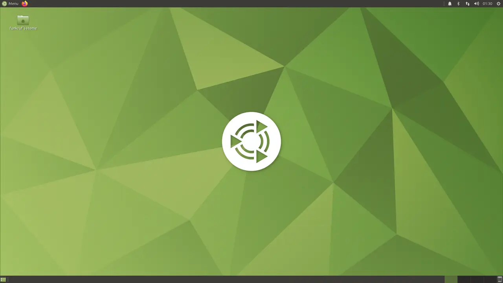
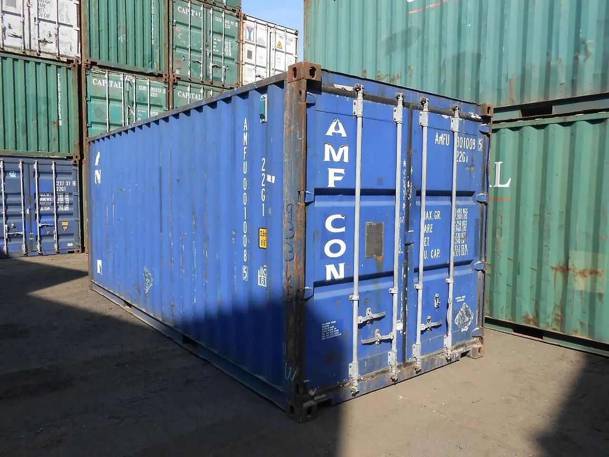

Living in
both OSes
General arrangement for running one developer workstation across two installs for months without the setup rotting.
Every asset class gets exactly one source of truth and a replicator that understands the OS difference. One canonical copy in a neutral store; each OS materialises it locally; edits go back to the store, never sideways between installs. Never a shared partition holding a working tree [10], never a cloud-sync folder holding a .git directory [16].
Legend
Host A · Windows
Incumbent. Owns Outlook, Teams desktop, DPAPI, Credential Manager, NTFS.

Host B · Linux
Candidate. Owns ext4, case sensitivity, the exec bit, LF, a real kernel.
Conduit schedule
One row per asset classRead each row left-to-right: what exists on Windows, what the single source of truth is, what replicates it, what exists on Linux. The junction is the only box you edit.
Code & repositories
Spec'dC:\src\<repo> — native NTFS, cloned locally
git clone natively on each OS, into a native filesystem~/src/<repo> — ext4, cloned locally
Repo-level behaviour
Spec'dCRLF checkout where the repo says so
.gitattributes, committedLF checkout where the repo says so
* text=auto plus explicit rules for binaries and shell scripts; run git add --renormalize . once after adding it. Per-machine core.autocrlf cannot be enforced across machines and is now regarded as the cause rather than the cure [14]. Leave core.fileMode at its default true — you only disable it to paper over a filesystem that cannot represent the bit [9].Dotfiles
Spec'd ⚠%USERPROFILE% targets, Windows paths, Windows Terminal
$HOME targets, XDG paths, the Linux terminal
SeCreateSymbolicLinkPrivilege, and elevated setup scripts need Start-Process -Wait or chezmoi races ahead [2]. .chezmoi.kernel.osrelease separates WSL from bare Linux if you end up with three environments rather than two [2].Machine-local git config
Spec'dRendered ~/.gitconfig + per-context includes
~/.gitconfig template with includeIfRendered ~/.gitconfig + per-context includes
includeIf "gitdir:~/work/" makes work vs personal signing keys and emails follow the directory, on both OSes, from a single file [9]. No duplication, no per-machine drift.Secrets & passwords
Spec'dVault CLI + agent. DPAPI blobs stay where they are — they do not travel.
pass)Vault CLI + agent. Re-authenticate; never export.
SSH authentication keys
One key per installKey A — enrolled at the host, attributable to this install
Key B — enrolled at the host, attributable to this install
An ed25519-sk resident key is physically single, so the same credential legitimately serves both installs: you plug in and pull the handle back down, and the private key never leaves the hardware [22].
ssh-keygen -O resident, firmware 5.2.3+, FIDO2 PIN set. The same token can sign commits, keeping auth and signing on one device [26].
Git host credentials
Spec'd ⚠GCM backend wincredman (default) or dpapi
GCM backend secretservice, or gpg/pass
secretservice (libsecret / GNOME Keyring) requires a graphical session, so a headless or SSH-only Linux box falls back to gpg/pass with pinentry configured [18]. If you prefer git's own helper, git-credential-libsecret is the modern Linux choice — the old libgnome-keyring helper has been deprecated since 2014 [19].Commit signing
Spec'dSame key file path, resolved by the chezmoi template
gpg.format = sshSame key file path, resolved by the chezmoi template
Browser state
Spec'd ⚠Signed-in browser profile
Signed-in browser profile
IDE settings
Spec'dWindows paths, Windows terminal profiles — machine-scoped, and deliberately local
Linux paths, Linux terminal profiles — machine-scoped, and deliberately local
machine and machine-overridable scoped settings are excluded by design — which is exactly what you want for paths and terminal profiles. Keybindings sync per platform by default; toggle settingsSync.keybindingsPerPlatform to unify them [27]. Rider's plugin is bundled and on by default, covering themes, keymaps, code styles, live templates and the enabled-plugin list [28].Documents & media
Spec'dNative sync client
Native sync client
.git directory (see route R-B).Toolchain versions
Spec'dSDK installed per machine, version selected by the repo
global.json, committed in the repoSDK installed per machine, version selected by the repo
paths field — [".dotnet", "$host$"] — that lets a repo carry its own SDK and stop caring what the host has installed [33].App config — Outlook, Teams
No conduit · accept the lossOutlook profile, Teams desktop client
Email and calendar happen in a browser
Abandoned routes
Drawn so they are not builtShared NTFS / exFAT partition holding a working tree
SeveredWindows SIDs, no exec bit, case-insensitive
uid/gid, exec bit, case-sensitive, symlinks
- It fails at step one.
git initon an NTFS mount can fail outright:chmod on …/.git/config.lock failed: Operation not permitted[11]. - Phantom modifications. The executable bit is not preserved, so git reports changes until you set
core.fileMode false— disabling a real signal to work around the medium [10][9]. - Silent case collapse. A repo containing
File.txtandfile.txtloses one of them on the Windows side; folders differing only by case get merged [15]. - Symlinks degrade to text. Without
SeCreateSymbolicLinkPrivilegeor developer mode, git stores them as plain files [9]. - Ownership never matches. Windows SIDs against Linux uid/gid, papered over with
uid=/gid=/dmask/fmaskmount options [10]. - The foundation itself is unsettled in 2026. Field reports on in-kernel
ntfs3include out-of-memory on large copies, hangs and data loss, with the practical advice being to blacklist it and take the slower, reliable ntfs-3g [13]. In January 2026 an LKML "ntfs filesystem remake" series arguedntfs3"still has many problems and is poorly maintained", offering a replacement passing 308 xfstests againstntfs3's 235 [12].
A shared partition looks like it solves drift — one copy, two OSes. It only moves the divergence into filesystem semantics you cannot reconcile.
Both ends still stand. The span does not. Clone twice instead.
Cloud-sync folder holding a .git directory
Severed- Incompatible atomicity assumptions. File sync and transactional VCS disagree about what a write is; a badly timed sync cycle over git's internal files corrupts the repo, and the community verdict is that corruption is a matter of when, not if [16][17].
- The supported shape, if you want it.
git-remote-dropboxuses the Dropbox API rather than the desktop client's file operations — Dropbox as a remote, not as a working tree [17]. - What the sync folder is genuinely for. Research notes, documents, media — see C-11. The rule is about
.git, not about Dropbox.
Repository under /mnt/c in WSL2
SeveredShared package cache across OSes
Severed- NuGet defaults to
%userprofile%\.nuget\packagesand~/.nuget/packages;NUGET_PACKAGEScan point both at one path [32] — and doing so buys nothing while risking path-encoded breakage. - Caches (NuGet, npm, bun) are derived state. They are deliberately not an asset class on this sheet. Let each install rebuild its own.
Hand-copying dotnet user-secrets between installs
Severed- User secrets live at
%APPDATA%\Microsoft\UserSecrets\<id>\secrets.jsonand~/.microsoft/usersecrets/<id>/secrets.json— per-user, per-OS, outside the project. The ID in the.csprojis shared; the file is not [31]. - Treat the vault at C-05 as the source and script the re-seed. Copying JSON by hand creates a second editable copy, which is the one thing this whole sheet exists to prevent.
Material selection — dotfile manager
Conduit C-03Three bars must be cleared at once: real Windows support, per-OS templating from a single branch, and secrets pulled live from a vault rather than committed. Exactly one option clears all three.
| Material | ⭐ Stars | Windows | Per-OS templating | Secrets | Learning cost |
|---|---|---|---|---|---|
| chezmoi Specified |
⭐ 21k | ✓ [1] | ✓ Go templates, .chezmoi.os [2] |
✓ Vault integration + age/gpg [3] | Medium |
| yadm | ⭐ 6.4k | ✓ [1] | ~ ##os.Linux alternate files only [8] |
Encryption yes, vault ✗ [1] | Low |
| GNU Stow | not on GitHub | ✗ needs symlinks + Perl [4] | ✗ | ✗ | Very low |
| Bare git repo | — | ✓ [1] | ✗ | ✗ [1] | Low |
| home-manager | ⭐ 10k | ✗ native; WSL only [5] | ✓ | ✓ (sops-nix) | Very high |
Counter-view on record
On Hacker News, developers who evaluated Stow and trialled chezmoi report settling on yadm for its lower ceremony [7]. Worth knowing — but the friction people hit with yadm is precisely this migration's case: identical content that must live at different paths on different OSes [8]. That is chezmoi's home turf.
Shell parity — known deviations
TolerancesSpecification
Keep PowerShell as the scripting language on both hosts. One templated profile.ps1 in chezmoi: the paths differ (~/.config/powershell/profile.ps1 on Linux, Documents\PowerShell on Windows) but the content is one file [20][21].
Do not fight to make it your Linux interactive shell — the ecosystem there (completions, prompts, pipelines, man pages) is bash/zsh/fish-shaped. Put shared logic in .ps1 files invoked from either shell; keep interactive aliases in a chezmoi-templated shell rc.
Terminal emulator: pick a cross-platform one (WezTerm, Alacritty) so keybindings are a single config file rather than Windows Terminal JSON on one side and something else on the other.
What breaks on the Linux host [20]
- No COM.
New-Object -ComObjectfails. - No
Get-WinEvent, noGet-CimInstance, no ActiveDirectory module. Windows-specific modules are simply not shipped. - Paths become case-sensitive.
Get-Item "Report.csv"fails againstreport.csv— the same class of surprise as the case collapse in route R-A, arriving from the other direction. - .NET Framework-targeted modules will not load. Only .NET (Core) builds.
- Remoting over WinRM needs NTLM/Negotiate or Basic-over-HTTPS. No Kerberos.
.NET & TS toolchain schedule
Conduit C-12| Concern | Host A · Windows | Host B · Linux | Alignment method |
|---|---|---|---|
| SDK version | Per-machine install | Per-machine install | global.json in the repo, rollForward: latestFeature [33] |
| User secrets | %APPDATA%\Microsoft\UserSecrets\<id>\secrets.json [31] |
~/.microsoft/usersecrets/<id>/secrets.json [31] |
⚠ Not synced by design — re-seed from the vault |
| NuGet cache | %userprofile%\.nuget\packages [32] |
~/.nuget/packages [32] |
✗ Do not share — it is a cache; let each rebuild it |
Alternate scheme — move the toolchain into the container
For a long overlap
What it is
devcontainer.json is an open specification for describing a development environment — OS, runtime, tools, extensions, services — as code, supported by a range of tools rather than one vendor [34]. Microsoft publishes .NET images and documents dev containers specifically as the way to try SDK versions without touching the host install [35].
What it buys
- The SDK, runtime and tool set stop being per-OS state — they are in the repo, so there is nothing to keep aligned between installs [34].
- Testing a new .NET version perturbs neither host [35].
- The container is Linux either way — so your build runs on Linux semantics (case-sensitive, LF, exec bit) from day one on Windows too. You discover porting problems before you switch, not after.
What it does not buy
- It covers none of C-03 through C-11: dotfiles, shell, credentials, browser, IDE settings. Every other row of the schedule still applies.
- On Windows it runs over WSL2, so route R-C reappears — the repo belongs on the Linux side of the boundary [36].
Standing orders
Anti-drift, daily- Both installs run
chezmoi applyon login. Drift then shows up as a diff, not as a surprise months later [1]. - Run
chezmoi diffbefore any config edit, so you never edit the materialised file instead of the source [1]. - Nothing is a source of truth unless it is in a git remote, a vault, or a sync account. If it only exists on one install, it does not exist.
- Every unpushed branch is drift. Push daily, even work in progress.


Related sheets
Reference documents
37 sources- 01
chezmoi — dotfile manager comparison tableofficial
- 02
- 03
- 04
GNU Stowofficial
- 05
NixOS Discourse — home-manager inside NixOS-WSLforum
- 06
home-manager (nix-community) ⭐ 10kofficial
- 07
Hacker News — dotfile manager discussionforum
- 08
BigGo — dotfile management tools comparisonnews
- 09
git-config documentationofficial
- 10
Fun with Linux — sharing a git repo on an NTFS partitionvendor-blog
- 11
Subzerodays — creating a git repo on NTFS in Linuxvendor-blog
- 12
LKML — “ntfs filesystem remake” patch series (Jan 2026)official
- 13
Dedoimedo — Linux NTFS driver reliabilityvendor-blog
- 14
Pope Kim — stop using core.autocrlfvendor-blog
- 15
Microsoft Learn — Git case sensitivityofficial
- 16
Microsoft Tech Community — OneDrive is corrupting my Git repositoriesforum
- 17
SQLPey — Git and Dropbox safe practicesvendor-blog
- 18
- 19
Baeldung — libsecret as the Linux git credential providervendor-blog
- 20
- 21
Redmond Magazine — a smarter cross-platform PowerShell profilenews
- 22
Yubico — securing SSH with FIDO2official
- 23
Brandon Checketts — SSH ed25519 key best practicesvendor-blog
- 24
1Password — SSH agentofficial
- 25
tobywf — ditch GnuPG, sign commits with SSHvendor-blog
- 26
- 27
VS Code — Settings Syncofficial
- 28
JetBrains Rider — sharing your IDE settingsofficial
- 29
It's FOSS News — Microsoft retires the Teams Linux appnews
- 30
How-To Geek — Firefox Sync that actually worksnews
- 31
- 32
- 33
- 34
containers.dev — Development Containers specificationofficial
- 35
.NET Blog — exploring new .NET releases with dev containersvendor-blog
- 36
- 37